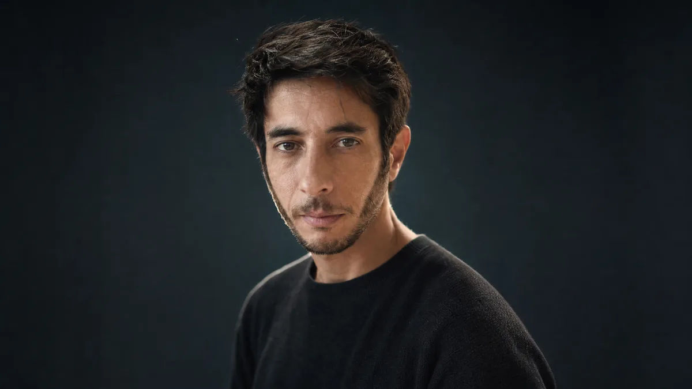

Director · Artista · Realizador integral
Soy director, artista visual y realizador integral. Durante más de 15 años trabajé en la intersección entre cine, animación, 3D, postproducción e inteligencia artificial, siempre con una idea central: la tecnología solo importa cuando ayuda a contar mejor una historia.
He dirigido y desarrollado proyectos para NBC/Peacock, Konami, marcas globales, videoclips, cortometrajes, animación infantil, branded content y experiencias interactivas. También lideré equipos internacionales de más de 80 artistas y participé en Silent Hill: Ascension, producción ganadora del Emmy 2024 a Outstanding Innovation in Emerging Media Programming.
Mi trabajo se mueve entre el oficio clásico y las herramientas nuevas: concept art, dirección, cinematografía, mundos virtuales, IA generativa y pipelines de producción. Pero el objetivo sigue siendo el mismo: crear imágenes con intención, construir mundos con alma y contar historias que no se sientan generadas, sino vividas.
Ver currículum (PDF) ↗
Trayectoria y filmografía
Manifiesto
Del storyboard en papel al render en tiempo real. De dirigir actores en set a diseñar pipelines con IA generativa. La tecnología transforma la manera de producir, pero no cambia la pregunta esencial: qué siente el espectador cuando aparece la imagen.
Trabajo con cine, animación, 3D, postproducción e inteligencia artificial porque cada herramienta abre una posibilidad distinta. Pero ninguna reemplaza la mirada, el ritmo, la tensión dramática ni la intuición narrativa.
No dirijo para las máquinas. Dirijo para las personas.